Email Us
Please send us an email, we would love to hear from you!

The Christmas break just started. Visiting family was out of the question because of Covid-19 international travel restrictions. With short days, cold and miserable weather and little snow on the ground we decided, instead of diving straight into doing chores for two weeks non stop, a trip was in order. Usually booking affordable accommodation just before Christmas somewhere pretty nearby is not possible, but because of Covid-19, not that much travel went our way as well. Luck was with us, we found a nice affordable little cottage on Skye, with availability (as it turned out later) just before we all would go into another stay-at-home lockdown. A whole rustic cottage just for us, with a wood stove, modern kitchen, no wifi or cell service, and a warm shower. What else does one need?
We drove over and by the time we got close to our temporary home it was already dark. Hardly avoidable since the shortest day just happened, and on that day we have 6 hours and 35 minutes of daylight, with sunset happening around 3.30 pm. We were on one of the typical Scottish one-lane roads, this one dead ending in Elgol. Not that busy of a place you would think, but actually there were quite some cars on the road. We let them overtake us in passing places, since we don’t know the road and thus weren’t as fast, and also travelled with 2 kayaks on the roof. We saw the last car that overtook us disappear in the distance, but suddenly the red lights from the back of the car stopped moving and stayed put. We weren’t sure what happened. But within no time we had caught up and realized the car was surrounded by highland cows. These were making their way slowly on the road, and were not interested in letting cars pass by. Very surprisingly, they all turned into a passing place so that the car in front of us could pass. Really? These cows know the scottish road rules better than most tourists! But no, they didn’t stop in the passing place, they kept walking. The other car had managed to squeeze by, but now we were stuck in a cow parade. After a while and another passing place we managed to overtake them and we couldn’t resist turning around to take some pictures of them. They are so cute! But then they overtook us again. We played cat and mouse for a while, but eventually we managed to get to our destination.
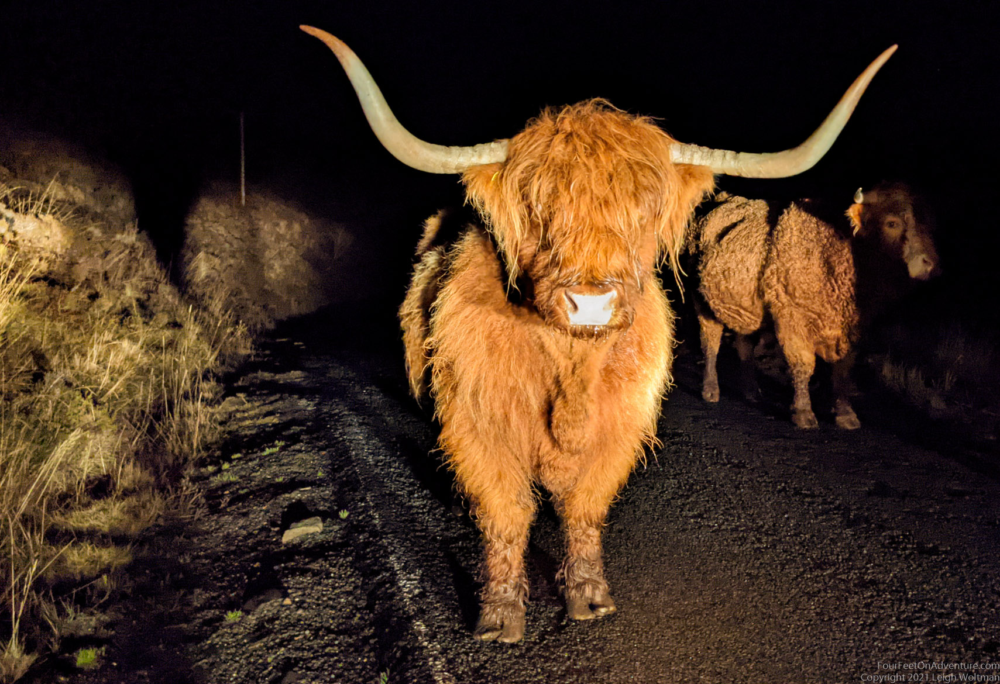
The cottage was amazing. Thick walls, old, but clean. It didn’t take long before we had the fire going. We realized we were still quite full from the Fish & Chips we stumbled upon near the Skye Bridge, which was good because I forgot to bring one of the meals I was planning on bringing. And we didn’t fancy a trip to a grocery store, that would take us about an hour back and forth, probably more counting on some cow parade delay.
Instead, we decided to go on a little adventure and catch low tide at Spar cave, a cave nearby. This cave was supposedly amazing, and you could walk inside only at low tide. Well, we found it after a bit of scrambling, but either I had the tides wrong or you need a big tide to get inside and we knew we were in between big tides with a relatively small difference between high and low tide. Had we brought our kayak bibs we could have just walked in. Or our kayaks, we could have just paddled in! But no such foresight, instead we played a bit in the cave entrance, and decided to leave this adventure for another day. It’s actually the second time we almost made it to this cave, as we had it on our list once when Hilco, my brother, visited. Each time we get a bit closer!
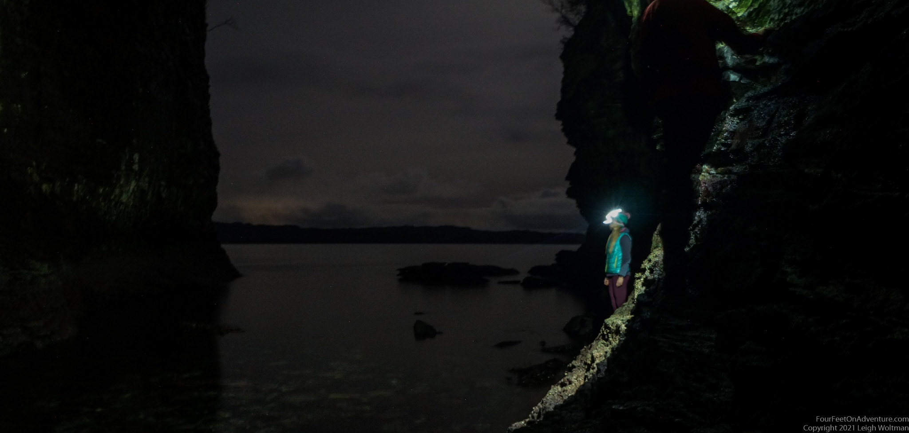
After a good night sleep and a morning in front of the fire it was time to give our kayaks a bit of a splash. The wind forecast was good to head from Elgol to the Cuillin ridge. The view from the beach in Elgol is reckoned to be the finest coastal view in the British Isles. I would argue there are probably more beaches claiming this title, but it is truly amazing to see 1000 meter hills coming straight out of the ocean, and specially for Christmas these were dashed with a bit of snow to make it all even more spectacular. In the summer Elgol is quite busy and has a little foot ferry from Elgol to the Cuilins, but this time of the year there was just us and our kayaks.
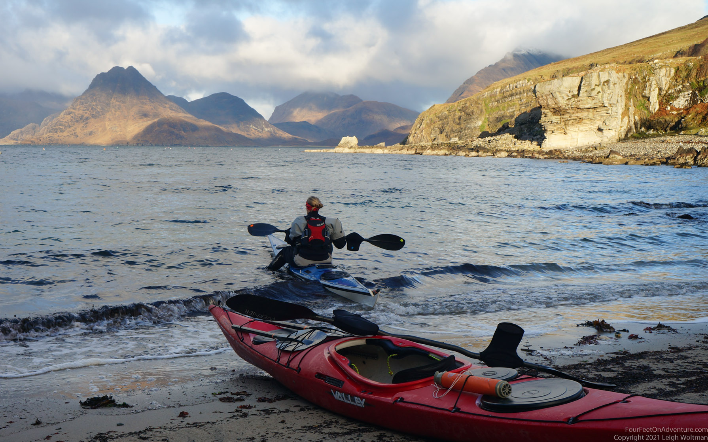
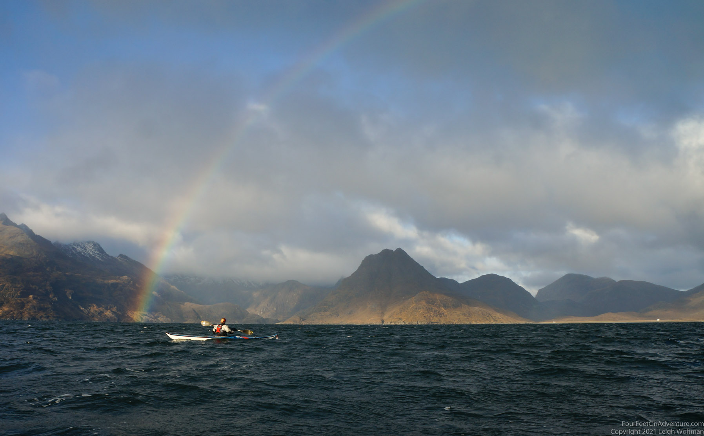
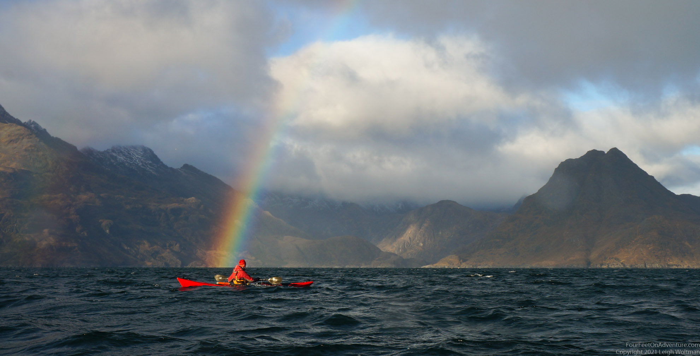
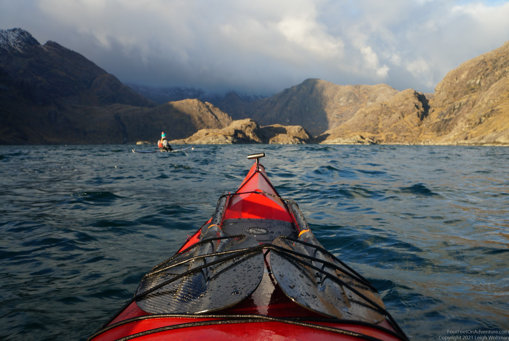
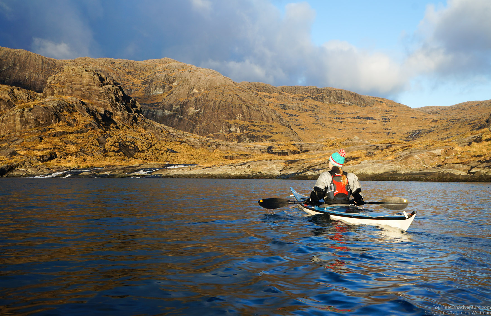
We had time to explore Loch Coruisk, a lake surrounded by the Cuilins and connected with a short river over rock slabs to the ocean, where we came from.
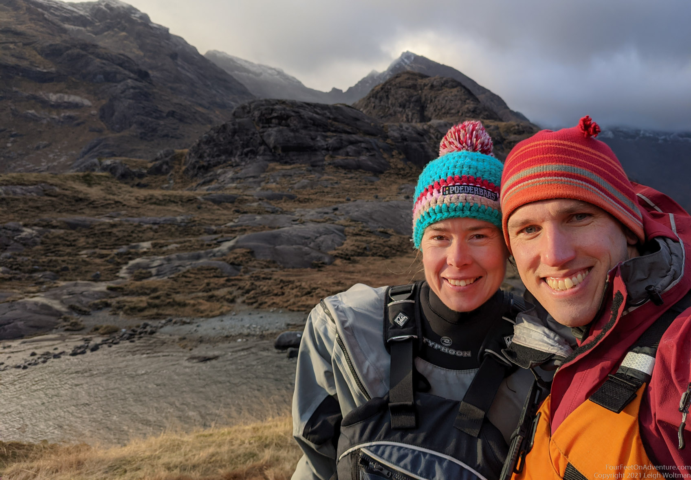
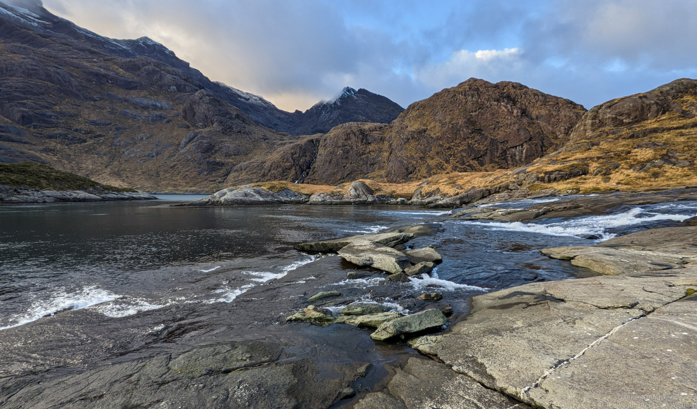
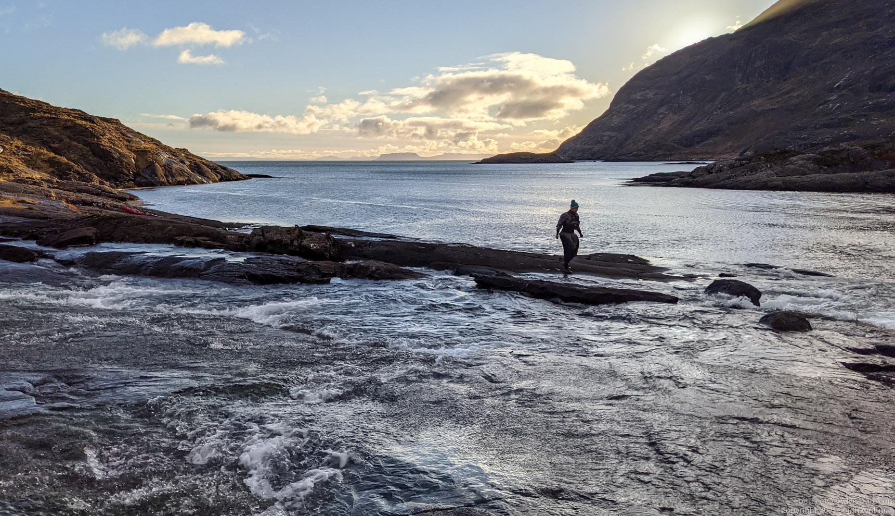
We explored a bit, but then sunset was approaching and we had to paddle back to Elgol, which was easy with the wind in our backs. A local dog came to play ball with us for a while, then we headed back to our cottage and fireplace.
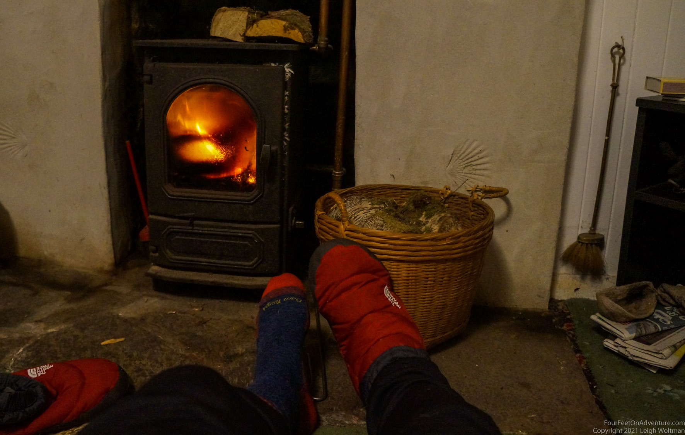
Unfortunately not the best of nights followed. The wind picked up and because it can get very strong in unsheltered peninsula’s, exactly such as the one where at the top of the driveway our car was sitting with the kayaks on top, we decided upon a 2.30 am mission to rescue our kayaks from a windy sleaty weather attack. We got them down to our cottage. The sleat had turned to rain, and we found out that our rustic old house had one disadvantage; a leaking roof. And not just anywhere, right above our heads. We moved the bed away from the drip, and managed a few hours of sleep.
What better way to start the morning then with a fire! We couldn’t get enough of it. Also we were still tired and drowsy of the night activities. But, it was time to get a move on things. I left for a run to the other side of Skye, but not after coming across our friends, the highlands bulls, while I was wearing a red coat. Fortunately they didn’t seem to care.
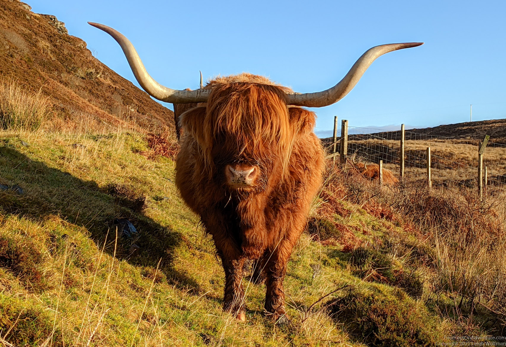
I cut over to the Camasunary beach where a bothy from the mountain bothies organization, closed because of Covid19, provides shelter for the wanderers who are looking for a free roof over their heads and a view of the Cuilins to go with that. From there, I picked up the Skye trail to Glen Sligachan. The rain, sleat and snow only added to the wild atmosphere of the amazing glen with the black Cuillins on the left and other hills on the right, with in between just meandering rivers going from loch to loch, bog and stones.
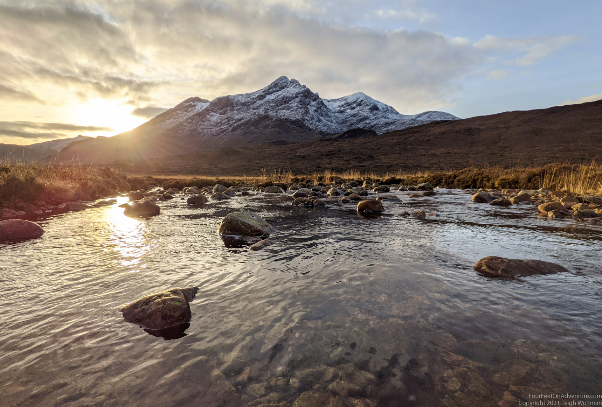
Suddenly something in the landscape moved. A deer? No, it looked like a person in the distance! It must be Leigh!!
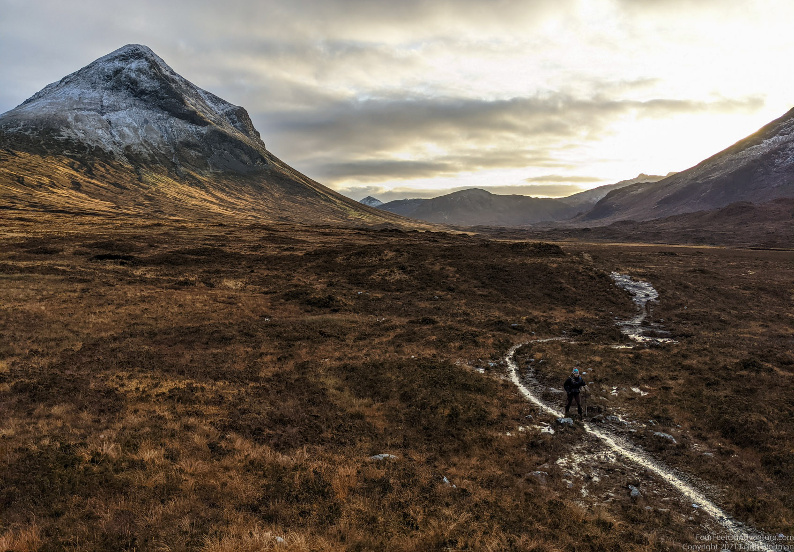
Leigh in the meantime had driven around and came walking in my direction from the other side on this beautiful and relatively flat watershed with a good view to the Cuilins. It was back (for Leigh) and further (for me) to Sligachan, over a stoney bridge made by the famous road and bridge engineer Thomas Telford where the car was waiting and the Skye adventure came to an end. Well, almost at an end. Another Fish & Chips place was found to be open even on this Christmas eve, so the decision to have a last treat before leaving the island and driving back home was made easy.
Please send us an email, we would love to hear from you!